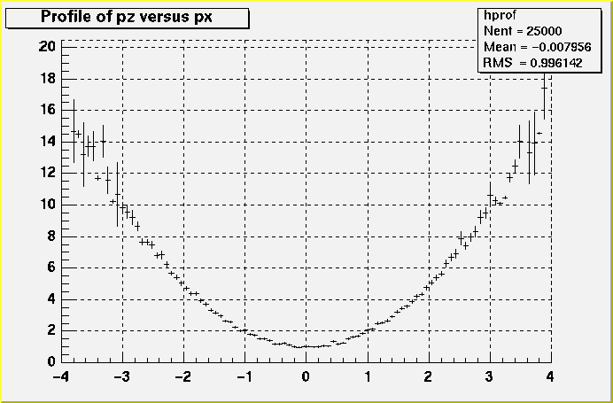
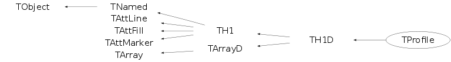

class TProfile: public TH1D
Profile histograms are used to display the mean
value of Y and its RMS for each bin in X. Profile histograms are in many cases an
elegant replacement of two-dimensional histograms : the inter-relation of two
measured quantities X and Y can always be visualized by a two-dimensional
histogram or scatter-plot; its representation on the line-printer is not particularly
satisfactory, except for sparse data. If Y is an unknown (but single-valued)
approximate function of X, this function is displayed by a profile histogram with
much better precision than by a scatter-plot.
The following formulae show the cumulated contents (capital letters) and the values
displayed by the printing or plotting routines (small letters) of the elements for bin J.
2
H(J) = sum Y E(J) = sum Y
l(J) = sum l L(J) = sum l
h(J) = H(J)/L(J) s(J) = sqrt(E(J)/L(J)- h(J)**2)
e(J) = s(J)/sqrt(L(J))
In the special case where s(J) is zero (eg, case of 1 entry only in one bin)
e(J) is computed from the average of the s(J) for all bins if the static function
TProfile::Approximate has been called.
This simple/crude approximation was suggested in order to keep the bin
during a fit operation. But note that this approximation is not the default behaviour.
Example of a profile histogram with its graphics output
{
TCanvas *c1 = new TCanvas("c1","Profile histogram example",200,10,700,500);
hprof = new TProfile("hprof","Profile of pz versus px",100,-4,4,0,20);
Float_t px, py, pz;
for ( Int_t i=0; i<25000; i++) {
gRandom->Rannor(px,py);
pz = px*px + py*py;
hprof->Fill(px,pz,1);
}
hprof->Draw();
}
/*

*/
Function Members (Methods)
public:
| TProfile() | |
| TProfile(const TProfile& profile) | |
| TProfile(const char* name, const char* title, Int_t nbinsx, const Float_t* xbins, Option_t* option = "") | |
| TProfile(const char* name, const char* title, Int_t nbinsx, const Double_t* xbins, Option_t* option = "") | |
| TProfile(const char* name, const char* title, Int_t nbinsx, Double_t xlow, Double_t xup, Option_t* option = "") | |
| TProfile(const char* name, const char* title, Int_t nbinsx, const Double_t* xbins, Double_t ylow, Double_t yup, Option_t* option = "") | |
| TProfile(const char* name, const char* title, Int_t nbinsx, Double_t xlow, Double_t xup, Double_t ylow, Double_t yup, Option_t* option = "") | |
| virtual | ~TProfile() |
| void | TObject::AbstractMethod(const char* method) const |
| virtual void | Add(const TH1* h1, Double_t c1 = 1) |
| virtual void | Add(TF1* h1, Double_t c1 = 1, Option_t* option = "") |
| virtual void | Add(const TH1* h1, const TH1* h2, Double_t c1 = 1, Double_t c2 = 1)MENU |
| void | TArrayD::AddAt(Double_t c, Int_t i) |
| virtual void | TH1D::AddBinContent(Int_t bin) |
| virtual void | TH1D::AddBinContent(Int_t bin, Double_t w) |
| static void | TH1::AddDirectory(Bool_t add = kTRUE) |
| static Bool_t | TH1::AddDirectoryStatus() |
| void | TArrayD::Adopt(Int_t n, Double_t* array) |
| virtual void | TObject::AppendPad(Option_t* option = "") |
| static void | Approximate(Bool_t approx = kTRUE) |
| Double_t | TArrayD::At(Int_t i) const |
| virtual void | TH1::Browse(TBrowser* b) |
| virtual Int_t | BufferEmpty(Int_t action = 0) |
| void | BuildOptions(Double_t ymin, Double_t ymax, Option_t* option) |
| virtual Double_t | TH1::Chi2Test(const TH1* h2, Option_t* option = "UU", Double_t* res = 0) const |
| virtual Double_t | TH1::Chi2TestX(const TH1* h2, Double_t& chi2, Int_t& ndf, Int_t& igood, Option_t* option = "UU", Double_t* res = 0) const |
| static TClass* | Class() |
| virtual const char* | TObject::ClassName() const |
| virtual void | TNamed::Clear(Option_t* option = "") |
| virtual TObject* | TNamed::Clone(const char* newname = "") const |
| virtual Int_t | TNamed::Compare(const TObject* obj) const |
| virtual Double_t | TH1::ComputeIntegral() |
| virtual void | Copy(TObject& hnew) const |
| virtual void | TObject::Delete(Option_t* option = "")MENU |
| virtual void | TH1::DirectoryAutoAdd(TDirectory*) |
| Int_t | TAttLine::DistancetoLine(Int_t px, Int_t py, Double_t xp1, Double_t yp1, Double_t xp2, Double_t yp2) |
| virtual Int_t | TH1::DistancetoPrimitive(Int_t px, Int_t py) |
| virtual void | Divide(const TH1* h1) |
| virtual void | Divide(TF1* h1, Double_t c1 = 1) |
| virtual void | Divide(const TH1* h1, const TH1* h2, Double_t c1 = 1, Double_t c2 = 1, Option_t* option = "")MENU |
| virtual void | TH1::Draw(Option_t* option = "") |
| virtual void | TObject::DrawClass() constMENU |
| virtual TObject* | TObject::DrawClone(Option_t* option = "") constMENU |
| virtual TH1* | DrawCopy(Option_t* option = "") const |
| virtual TH1* | TH1::DrawNormalized(Option_t* option = "", Double_t norm = 1) const |
| virtual void | TH1::DrawPanel()MENU |
| virtual void | TObject::Dump() constMENU |
| virtual void | TObject::Error(const char* method, const char* msgfmt) const |
| virtual void | TH1::Eval(TF1* f1, Option_t* option = "") |
| virtual void | TObject::Execute(const char* method, const char* params, Int_t* error = 0) |
| virtual void | TObject::Execute(TMethod* method, TObjArray* params, Int_t* error = 0) |
| virtual void | TH1::ExecuteEvent(Int_t event, Int_t px, Int_t py) |
| virtual void | TObject::Fatal(const char* method, const char* msgfmt) const |
| virtual TH1* | TH1::FFT(TH1* h_output, Option_t* option) |
| virtual Int_t | Fill(Double_t x, Double_t y) |
| virtual Int_t | Fill(const char* namex, Double_t y) |
| virtual Int_t | Fill(Double_t x, Double_t y, Double_t w) |
| virtual Int_t | Fill(const char* namex, Double_t y, Double_t w) |
| virtual void | TNamed::FillBuffer(char*& buffer) |
| virtual void | FillN(Int_t ntimes, const Double_t* x, const Double_t* y, const Double_t* w, Int_t stride = 1) |
| virtual void | TH1::FillRandom(const char* fname, Int_t ntimes = 5000) |
| virtual void | TH1::FillRandom(TH1* h, Int_t ntimes = 5000) |
| virtual Int_t | TH1::FindBin(Double_t x, Double_t y = 0, Double_t z = 0) |
| virtual Int_t | TH1::FindFirstBinAbove(Double_t threshold = 0, Int_t axis = 1) const |
| virtual Int_t | TH1::FindFixBin(Double_t x, Double_t y = 0, Double_t z = 0) const |
| virtual Int_t | TH1::FindLastBinAbove(Double_t threshold = 0, Int_t axis = 1) const |
| virtual TObject* | TH1::FindObject(const char* name) const |
| virtual TObject* | TH1::FindObject(const TObject* obj) const |
| virtual TFitResultPtr | TH1::Fit(const char* formula, Option_t* option = "", Option_t* goption = "", Double_t xmin = 0, Double_t xmax = 0)MENU |
| virtual TFitResultPtr | TH1::Fit(TF1* f1, Option_t* option = "", Option_t* goption = "", Double_t xmin = 0, Double_t xmax = 0) |
| static Int_t | TH1::FitOptionsMake(Option_t* option, Foption_t& Foption) |
| virtual void | TH1::FitPanel()MENU |
| const Double_t* | TArrayD::GetArray() const |
| Double_t* | TArrayD::GetArray() |
| TH1* | TH1::GetAsymmetry(TH1* h2, Double_t c2 = 1, Double_t dc2 = 0) |
| virtual Double_t | TArrayD::GetAt(Int_t i) const |
| virtual Color_t | TH1::GetAxisColor(Option_t* axis = "X") const |
| virtual Float_t | TH1::GetBarOffset() const |
| virtual Float_t | TH1::GetBarWidth() const |
| virtual Int_t | TH1::GetBin(Int_t binx, Int_t biny = 0, Int_t binz = 0) const |
| virtual Double_t | TH1::GetBinCenter(Int_t bin) const |
| virtual Double_t | GetBinContent(Int_t bin) const |
| virtual Double_t | GetBinContent(Int_t bin, Int_t) const |
| virtual Double_t | GetBinContent(Int_t bin, Int_t, Int_t) const |
| virtual Double_t | GetBinEffectiveEntries(Int_t bin) const |
| virtual Double_t | GetBinEntries(Int_t bin) const |
| virtual Double_t | GetBinError(Int_t bin) const |
| virtual Double_t | GetBinError(Int_t bin, Int_t) const |
| virtual Double_t | GetBinError(Int_t bin, Int_t, Int_t) const |
| virtual Double_t | TH1::GetBinLowEdge(Int_t bin) const |
| virtual TArrayD* | GetBinSumw2() |
| virtual const TArrayD* | GetBinSumw2() const |
| virtual Double_t | TH1::GetBinWidth(Int_t bin) const |
| virtual Double_t | TH1::GetBinWithContent(Double_t c, Int_t& binx, Int_t firstx = 0, Int_t lastx = 0, Double_t maxdiff = 0) const |
| virtual void | TH1::GetBinXYZ(Int_t binglobal, Int_t& binx, Int_t& biny, Int_t& binz) const |
| const Double_t* | TH1::GetBuffer() const |
| Int_t | TH1::GetBufferLength() const |
| Int_t | TH1::GetBufferSize() const |
| virtual Double_t | TH1::GetCellContent(Int_t binx, Int_t biny) const |
| virtual Double_t | TH1::GetCellError(Int_t binx, Int_t biny) const |
| virtual void | TH1::GetCenter(Double_t* center) const |
| virtual Int_t | TH1::GetContour(Double_t* levels = 0) |
| virtual Double_t | TH1::GetContourLevel(Int_t level) const |
| virtual Double_t | TH1::GetContourLevelPad(Int_t level) const |
| static Int_t | TH1::GetDefaultBufferSize() |
| static Bool_t | TH1::GetDefaultSumw2() |
| virtual Int_t | TH1::GetDimension() const |
| TDirectory* | TH1::GetDirectory() const |
| virtual Option_t* | TObject::GetDrawOption() const |
| static Long_t | TObject::GetDtorOnly() |
| virtual Double_t | TH1::GetEffectiveEntries() const |
| virtual Double_t | TH1::GetEntries() const |
| Option_t* | GetErrorOption() const |
| virtual Color_t | TAttFill::GetFillColor() const |
| virtual Style_t | TAttFill::GetFillStyle() const |
| virtual TF1* | TH1::GetFunction(const char* name) const |
| virtual const char* | TObject::GetIconName() const |
| virtual Double_t* | TH1::GetIntegral() |
| virtual Double_t | TH1::GetKurtosis(Int_t axis = 1) const |
| virtual Color_t | TH1::GetLabelColor(Option_t* axis = "X") const |
| virtual Style_t | TH1::GetLabelFont(Option_t* axis = "X") const |
| virtual Float_t | TH1::GetLabelOffset(Option_t* axis = "X") const |
| virtual Float_t | TH1::GetLabelSize(Option_t* axis = "X") const |
| virtual Color_t | TAttLine::GetLineColor() const |
| virtual Style_t | TAttLine::GetLineStyle() const |
| virtual Width_t | TAttLine::GetLineWidth() const |
| TList* | TH1::GetListOfFunctions() const |
| virtual void | TH1::GetLowEdge(Double_t* edge) const |
| virtual Color_t | TAttMarker::GetMarkerColor() const |
| virtual Size_t | TAttMarker::GetMarkerSize() const |
| virtual Style_t | TAttMarker::GetMarkerStyle() const |
| virtual Double_t | TH1::GetMaximum(Double_t maxval = FLT_MAX) const |
| virtual Int_t | TH1::GetMaximumBin() const |
| virtual Int_t | TH1::GetMaximumBin(Int_t& locmax, Int_t& locmay, Int_t& locmaz) const |
| virtual Double_t | TH1::GetMaximumStored() const |
| virtual Double_t | TH1::GetMean(Int_t axis = 1) const |
| virtual Double_t | TH1::GetMeanError(Int_t axis = 1) const |
| virtual Double_t | TH1::GetMinimum(Double_t minval = -FLT_MAX) const |
| virtual Int_t | TH1::GetMinimumBin() const |
| virtual Int_t | TH1::GetMinimumBin(Int_t& locmix, Int_t& locmiy, Int_t& locmiz) const |
| virtual Double_t | TH1::GetMinimumStored() const |
| virtual const char* | TNamed::GetName() const |
| virtual Int_t | TH1::GetNbinsX() const |
| virtual Int_t | TH1::GetNbinsY() const |
| virtual Int_t | TH1::GetNbinsZ() const |
| virtual Int_t | TH1::GetNdivisions(Option_t* axis = "X") const |
| virtual Double_t | TH1::GetNormFactor() const |
| virtual char* | GetObjectInfo(Int_t px, Int_t py) const |
| static Bool_t | TObject::GetObjectStat() |
| virtual Option_t* | TH1::GetOption() const |
| TVirtualHistPainter* | TH1::GetPainter(Option_t* option = "") |
| virtual Int_t | TH1::GetQuantiles(Int_t nprobSum, Double_t* q, const Double_t* probSum = 0) |
| virtual Double_t | TH1::GetRandom() const |
| virtual Double_t | TH1::GetRMS(Int_t axis = 1) const |
| virtual Double_t | TH1::GetRMSError(Int_t axis = 1) const |
| Int_t | TArray::GetSize() const |
| virtual Double_t | TH1::GetSkewness(Int_t axis = 1) const |
| virtual void | GetStats(Double_t* stats) const |
| Stat_t | TArrayD::GetSum() const |
| virtual Double_t | TH1::GetSumOfWeights() const |
| virtual TArrayD* | TH1::GetSumw2() |
| virtual const TArrayD* | TH1::GetSumw2() const |
| virtual Int_t | TH1::GetSumw2N() const |
| virtual Float_t | TH1::GetTickLength(Option_t* axis = "X") const |
| virtual const char* | TNamed::GetTitle() const |
| virtual Style_t | TH1::GetTitleFont(Option_t* axis = "X") const |
| virtual Float_t | TH1::GetTitleOffset(Option_t* axis = "X") const |
| virtual Float_t | TH1::GetTitleSize(Option_t* axis = "X") const |
| virtual UInt_t | TObject::GetUniqueID() const |
| TAxis* | TH1::GetXaxis() const |
| TAxis* | TH1::GetYaxis() const |
| virtual Double_t | GetYmax() const |
| virtual Double_t | GetYmin() const |
| TAxis* | TH1::GetZaxis() const |
| virtual Bool_t | TObject::HandleTimer(TTimer* timer) |
| virtual ULong_t | TNamed::Hash() const |
| virtual void | TObject::Info(const char* method, const char* msgfmt) const |
| virtual Bool_t | TObject::InheritsFrom(const char* classname) const |
| virtual Bool_t | TObject::InheritsFrom(const TClass* cl) const |
| virtual void | TObject::Inspect() constMENU |
| virtual Double_t | TH1::Integral(Option_t* option = "") const |
| virtual Double_t | TH1::Integral(Int_t binx1, Int_t binx2, Option_t* option = "") const |
| virtual Double_t | TH1::IntegralAndError(Int_t binx1, Int_t binx2, Double_t& err, Option_t* option = "") const |
| virtual Double_t | TH1::Interpolate(Double_t x) |
| virtual Double_t | TH1::Interpolate(Double_t x, Double_t y) |
| virtual Double_t | TH1::Interpolate(Double_t x, Double_t y, Double_t z) |
| void | TObject::InvertBit(UInt_t f) |
| virtual TClass* | IsA() const |
| Bool_t | TH1::IsBinOverflow(Int_t bin) const |
| Bool_t | TH1::IsBinUnderflow(Int_t bin) const |
| virtual Bool_t | TObject::IsEqual(const TObject* obj) const |
| virtual Bool_t | TObject::IsFolder() const |
| Bool_t | TObject::IsOnHeap() const |
| virtual Bool_t | TNamed::IsSortable() const |
| virtual Bool_t | TAttFill::IsTransparent() const |
| Bool_t | TObject::IsZombie() const |
| virtual Double_t | TH1::KolmogorovTest(const TH1* h2, Option_t* option = "") const |
| virtual void | LabelsDeflate(Option_t* axis = "X") |
| virtual void | LabelsInflate(Option_t* axis = "X") |
| virtual void | LabelsOption(Option_t* option = "h", Option_t* axis = "X") |
| virtual void | TNamed::ls(Option_t* option = "") const |
| void | TObject::MayNotUse(const char* method) const |
| virtual Long64_t | Merge(TCollection* list) |
| virtual void | TAttLine::Modify() |
| virtual void | Multiply(const TH1* h1) |
| virtual void | Multiply(TF1* h1, Double_t c1 = 1) |
| virtual void | Multiply(const TH1* h1, const TH1* h2, Double_t c1 = 1, Double_t c2 = 1, Option_t* option = "")MENU |
| virtual Bool_t | TObject::Notify() |
| void | TObject::Obsolete(const char* method, const char* asOfVers, const char* removedFromVers) const |
| static void | TObject::operator delete(void* ptr) |
| static void | TObject::operator delete(void* ptr, void* vp) |
| static void | TObject::operator delete[](void* ptr) |
| static void | TObject::operator delete[](void* ptr, void* vp) |
| void* | TObject::operator new(size_t sz) |
| void* | TObject::operator new(size_t sz, void* vp) |
| void* | TObject::operator new[](size_t sz) |
| void* | TObject::operator new[](size_t sz, void* vp) |
| TH1D& | TH1D::operator=(const TH1D& h1) |
| Double_t& | TArrayD::operator[](Int_t i) |
| Double_t | TArrayD::operator[](Int_t i) const |
| virtual void | TH1::Paint(Option_t* option = "") |
| virtual void | TObject::Pop() |
| virtual void | TH1::Print(Option_t* option = "") const |
| TH1D* | ProjectionX(const char* name = "_px", Option_t* option = "e") const |
| virtual void | PutStats(Double_t* stats) |
| virtual Int_t | TObject::Read(const char* name) |
| static TArray* | TArray::ReadArray(TBuffer& b, const TClass* clReq) |
| virtual TH1* | Rebin(Int_t ngroup = 2, const char* newname = "", const Double_t* xbins = 0) |
| virtual void | RebinAxis(Double_t x, TAxis* axis) |
| virtual void | TH1::Rebuild(Option_t* option = "") |
| virtual void | TH1::RecursiveRemove(TObject* obj) |
| virtual void | Reset(Option_t* option = "") |
| virtual void | TAttFill::ResetAttFill(Option_t* option = "") |
| virtual void | TAttLine::ResetAttLine(Option_t* option = "") |
| virtual void | TAttMarker::ResetAttMarker(Option_t* toption = "") |
| void | TObject::ResetBit(UInt_t f) |
| virtual void | TH1::ResetStats() |
| virtual void | TObject::SaveAs(const char* filename = "", Option_t* option = "") constMENU |
| virtual void | TAttFill::SaveFillAttributes(ostream& out, const char* name, Int_t coldef = 1, Int_t stydef = 1001) |
| virtual void | TAttLine::SaveLineAttributes(ostream& out, const char* name, Int_t coldef = 1, Int_t stydef = 1, Int_t widdef = 1) |
| virtual void | TAttMarker::SaveMarkerAttributes(ostream& out, const char* name, Int_t coldef = 1, Int_t stydef = 1, Int_t sizdef = 1) |
| virtual void | SavePrimitive(ostream& out, Option_t* option = "") |
| virtual void | Scale(Double_t c1 = 1, Option_t* option = "") |
| virtual void | TArrayD::Set(Int_t n) |
| void | TArrayD::Set(Int_t n, const Double_t* array) |
| virtual void | TArrayD::SetAt(Double_t v, Int_t i) |
| virtual void | TH1::SetAxisColor(Color_t color = 1, Option_t* axis = "X") |
| virtual void | TH1::SetAxisRange(Double_t xmin, Double_t xmax, Option_t* axis = "X") |
| virtual void | TH1::SetBarOffset(Float_t offset = 0.25) |
| virtual void | TH1::SetBarWidth(Float_t width = 0.5) |
| virtual void | TH1D::SetBinContent(Int_t bin, Double_t content) |
| virtual void | TH1D::SetBinContent(Int_t bin, Int_t, Double_t content) |
| virtual void | TH1D::SetBinContent(Int_t bin, Int_t, Int_t, Double_t content) |
| virtual void | SetBinEntries(Int_t bin, Double_t w) |
| virtual void | TH1::SetBinError(Int_t bin, Double_t error) |
| virtual void | TH1::SetBinError(Int_t binx, Int_t biny, Double_t error) |
| virtual void | TH1::SetBinError(Int_t binx, Int_t biny, Int_t binz, Double_t error) |
| virtual void | SetBins(Int_t nx, const Double_t* xbins) |
| virtual void | SetBins(Int_t nbins, Double_t xmin, Double_t xmax) |
| virtual void | TH1D::SetBinsLength(Int_t n = -1) |
| void | TObject::SetBit(UInt_t f) |
| void | TObject::SetBit(UInt_t f, Bool_t set) |
| virtual void | SetBuffer(Int_t buffersize, Option_t* option = "") |
| virtual void | TH1::SetCellContent(Int_t binx, Int_t biny, Double_t content) |
| virtual void | TH1::SetCellError(Int_t binx, Int_t biny, Double_t content) |
| virtual void | TH1::SetContent(const Double_t* content) |
| virtual void | TH1::SetContour(Int_t nlevels, const Double_t* levels = 0) |
| virtual void | TH1::SetContourLevel(Int_t level, Double_t value) |
| static void | TH1::SetDefaultBufferSize(Int_t buffersize = 1000) |
| static void | TH1::SetDefaultSumw2(Bool_t sumw2 = kTRUE) |
| virtual void | TH1::SetDirectory(TDirectory* dir) |
| virtual void | TObject::SetDrawOption(Option_t* option = "")MENU |
| static void | TObject::SetDtorOnly(void* obj) |
| virtual void | TH1::SetEntries(Double_t n) |
| virtual void | TH1::SetError(const Double_t* error) |
| virtual void | SetErrorOption(Option_t* option = "")MENU |
| virtual void | TAttFill::SetFillAttributes()MENU |
| virtual void | TAttFill::SetFillColor(Color_t fcolor) |
| virtual void | TAttFill::SetFillStyle(Style_t fstyle) |
| virtual void | TH1::SetLabelColor(Color_t color = 1, Option_t* axis = "X") |
| virtual void | TH1::SetLabelFont(Style_t font = 62, Option_t* axis = "X") |
| virtual void | TH1::SetLabelOffset(Float_t offset = 0.005, Option_t* axis = "X") |
| virtual void | TH1::SetLabelSize(Float_t size = 0.02, Option_t* axis = "X") |
| virtual void | TAttLine::SetLineAttributes()MENU |
| virtual void | TAttLine::SetLineColor(Color_t lcolor) |
| virtual void | TAttLine::SetLineStyle(Style_t lstyle) |
| virtual void | TAttLine::SetLineWidth(Width_t lwidth) |
| virtual void | TAttMarker::SetMarkerAttributes()MENU |
| virtual void | TAttMarker::SetMarkerColor(Color_t tcolor = 1) |
| virtual void | TAttMarker::SetMarkerSize(Size_t msize = 1) |
| virtual void | TAttMarker::SetMarkerStyle(Style_t mstyle = 1) |
| virtual void | TH1::SetMaximum(Double_t maximum = -1111)MENU |
| virtual void | TH1::SetMinimum(Double_t minimum = -1111)MENU |
| virtual void | TH1::SetName(const char* name)MENU |
| virtual void | TH1::SetNameTitle(const char* name, const char* title) |
| virtual void | TH1::SetNdivisions(Int_t n = 510, Option_t* axis = "X") |
| virtual void | TH1::SetNormFactor(Double_t factor = 1) |
| static void | TObject::SetObjectStat(Bool_t stat) |
| virtual void | TH1::SetOption(Option_t* option = " ") |
| virtual void | TH1::SetStats(Bool_t stats = kTRUE)MENU |
| virtual void | TH1::SetTickLength(Float_t length = 0.02, Option_t* axis = "X") |
| virtual void | TH1::SetTitle(const char* title)MENU |
| virtual void | TH1::SetTitleFont(Style_t font = 62, Option_t* axis = "X") |
| virtual void | TH1::SetTitleOffset(Float_t offset = 1, Option_t* axis = "X") |
| virtual void | TH1::SetTitleSize(Float_t size = 0.02, Option_t* axis = "X") |
| virtual void | TObject::SetUniqueID(UInt_t uid) |
| virtual void | TH1::SetXTitle(const char* title) |
| virtual void | TH1::SetYTitle(const char* title) |
| virtual void | TH1::SetZTitle(const char* title) |
| virtual TH1* | TH1::ShowBackground(Int_t niter = 20, Option_t* option = "same")MENU |
| virtual void | ShowMembers(TMemberInspector& insp) |
| virtual Int_t | TH1::ShowPeaks(Double_t sigma = 2, Option_t* option = "", Double_t threshold = 0.05)MENU |
| virtual Int_t | TNamed::Sizeof() const |
| virtual void | TH1::Smooth(Int_t ntimes = 1, Option_t* option = "")MENU |
| static void | TH1::SmoothArray(Int_t NN, Double_t* XX, Int_t ntimes = 1) |
| static void | TH1::StatOverflows(Bool_t flag = kTRUE) |
| virtual void | Streamer(TBuffer& b) |
| void | StreamerNVirtual(TBuffer& b) |
| virtual void | Sumw2() |
| virtual void | TObject::SysError(const char* method, const char* msgfmt) const |
| Bool_t | TObject::TestBit(UInt_t f) const |
| Int_t | TObject::TestBits(UInt_t f) const |
| static TH1* | TH1::TransformHisto(TVirtualFFT* fft, TH1* h_output, Option_t* option) |
| virtual void | TH1::UseCurrentStyle() |
| virtual void | TObject::Warning(const char* method, const char* msgfmt) const |
| virtual Int_t | TObject::Write(const char* name = 0, Int_t option = 0, Int_t bufsize = 0) |
| virtual Int_t | TObject::Write(const char* name = 0, Int_t option = 0, Int_t bufsize = 0) const |
| static void | TArray::WriteArray(TBuffer& b, const TArray* a) |
protected:
| Bool_t | TArray::BoundsOk(const char* where, Int_t at) const |
| virtual Int_t | BufferFill(Double_t, Double_t) |
| virtual Int_t | BufferFill(Double_t x, Double_t y, Double_t w) |
| static bool | TH1::CheckAxisLimits(const TAxis* a1, const TAxis* a2) |
| static bool | TH1::CheckBinLimits(const TAxis* a1, const TAxis* a2) |
| static bool | TH1::CheckConsistency(const TH1* h1, const TH1* h2) |
| static bool | TH1::CheckConsistentSubAxes(const TAxis* a1, Int_t firstBin1, Int_t lastBin1, const TAxis* a2, Int_t firstBin2 = 0, Int_t lastBin2 = 0) |
| static bool | TH1::CheckEqualAxes(const TAxis* a1, const TAxis* a2) |
| virtual void | TObject::DoError(int level, const char* location, const char* fmt, va_list va) const |
| virtual Double_t | TH1::DoIntegral(Int_t ix1, Int_t ix2, Int_t iy1, Int_t iy2, Int_t iz1, Int_t iz2, Double_t& err, Option_t* opt, Bool_t doerr = kFALSE) const |
| Int_t | Fill(const Double_t* v) |
| virtual Bool_t | TH1::FindNewAxisLimits(const TAxis* axis, const Double_t point, Double_t& newMin, Double_t& newMax) |
| void | TObject::MakeZombie() |
| Bool_t | TArray::OutOfBoundsError(const char* where, Int_t i) const |
| static Bool_t | TH1::RecomputeAxisLimits(TAxis& destAxis, const TAxis& anAxis) |
| static Bool_t | TH1::SameLimitsAndNBins(const TAxis& axis1, const TAxis& axis2) |
| virtual void | TH1::SavePrimitiveHelp(ostream& out, const char* hname, Option_t* option = "") |
| void | SetBins(const Int_t* nbins, const Double_t* range) |
private:
| virtual Int_t | Fill(Double_t) |
| virtual void | FillN(Int_t, const Double_t*, const Double_t*, Int_t) |
| Double_t* | GetB() |
| Double_t* | GetB2() |
| Double_t* | GetW() |
| Double_t* | GetW2() |
| virtual void | SetBins(Int_t, const Double_t*, Int_t, const Double_t*) |
| virtual void | SetBins(Int_t, Double_t, Double_t, Int_t, Double_t, Double_t) |
| virtual void | SetBins(Int_t, const Double_t*, Int_t, const Double_t*, Int_t, const Double_t*) |
| virtual void | SetBins(Int_t, Double_t, Double_t, Int_t, Double_t, Double_t, Int_t, Double_t, Double_t) |
Data Members
public:
| enum TH1::[unnamed] { | kNoStats | |
| kUserContour | ||
| kCanRebin | ||
| kLogX | ||
| kIsZoomed | ||
| kNoTitle | ||
| kIsAverage | ||
| kNstat | ||
| }; | ||
| enum TObject::EStatusBits { | kCanDelete | |
| kMustCleanup | ||
| kObjInCanvas | ||
| kIsReferenced | ||
| kHasUUID | ||
| kCannotPick | ||
| kNoContextMenu | ||
| kInvalidObject | ||
| }; | ||
| enum TObject::[unnamed] { | kIsOnHeap | |
| kNotDeleted | ||
| kZombie | ||
| kBitMask | ||
| kSingleKey | ||
| kOverwrite | ||
| kWriteDelete | ||
| }; |
public:
| Double_t* | TArrayD::fArray | [fN] Array of fN doubles |
| Int_t | TArray::fN | Number of array elements |
protected:
| Short_t | TH1::fBarOffset | (1000*offset) for bar charts or legos |
| Short_t | TH1::fBarWidth | (1000*width) for bar charts or legos |
| TArrayD | fBinEntries | number of entries per bin |
| TArrayD | fBinSumw2 | Array of sum of squares of weights per bin |
| Double_t* | TH1::fBuffer | [fBufferSize] entry buffer |
| Int_t | TH1::fBufferSize | fBuffer size |
| TArrayD | TH1::fContour | Array to display contour levels |
| Int_t | TH1::fDimension | !Histogram dimension (1, 2 or 3 dim) |
| TDirectory* | TH1::fDirectory | !Pointer to directory holding this histogram |
| Double_t | TH1::fEntries | Number of entries |
| EErrorType | fErrorMode | Option to compute errors |
| Color_t | TAttFill::fFillColor | fill area color |
| Style_t | TAttFill::fFillStyle | fill area style |
| TList* | TH1::fFunctions | ->Pointer to list of functions (fits and user) |
| Double_t* | TH1::fIntegral | !Integral of bins used by GetRandom |
| Color_t | TAttLine::fLineColor | line color |
| Style_t | TAttLine::fLineStyle | line style |
| Width_t | TAttLine::fLineWidth | line width |
| Color_t | TAttMarker::fMarkerColor | Marker color index |
| Size_t | TAttMarker::fMarkerSize | Marker size |
| Style_t | TAttMarker::fMarkerStyle | Marker style |
| Double_t | TH1::fMaximum | Maximum value for plotting |
| Double_t | TH1::fMinimum | Minimum value for plotting |
| TString | TNamed::fName | object identifier |
| Int_t | TH1::fNcells | number of bins(1D), cells (2D) +U/Overflows |
| Double_t | TH1::fNormFactor | Normalization factor |
| TString | TH1::fOption | histogram options |
| TVirtualHistPainter* | TH1::fPainter | !pointer to histogram painter |
| Bool_t | fScaling | !True when TProfile::Scale is called |
| TArrayD | TH1::fSumw2 | Array of sum of squares of weights |
| TString | TNamed::fTitle | object title |
| Double_t | TH1::fTsumw | Total Sum of weights |
| Double_t | TH1::fTsumw2 | Total Sum of squares of weights |
| Double_t | TH1::fTsumwx | Total Sum of weight*X |
| Double_t | TH1::fTsumwx2 | Total Sum of weight*X*X |
| Double_t | fTsumwy | Total Sum of weight*Y |
| Double_t | fTsumwy2 | Total Sum of weight*Y*Y |
| TAxis | TH1::fXaxis | X axis descriptor |
| TAxis | TH1::fYaxis | Y axis descriptor |
| Double_t | fYmax | Upper limit in Y (if set) |
| Double_t | fYmin | Lower limit in Y (if set) |
| TAxis | TH1::fZaxis | Z axis descriptor |
| static Bool_t | TH1::fgAddDirectory | !flag to add histograms to the directory |
| static Bool_t | fgApproximate | bin error approximation option |
| static Int_t | TH1::fgBufferSize | !default buffer size for automatic histograms |
| static Bool_t | TH1::fgDefaultSumw2 | !flag to call TH1::Sumw2 automatically at histogram creation time |
| static Bool_t | TH1::fgStatOverflows | !flag to use under/overflows in statistics |
Class Charts
{kind=link}
{kind=link}
{kind=link}
{kind=link}

Function documentation
TProfile()
Default constructor for Profile histograms*-*-*- *-* ==========================================
~TProfile()
Default destructor for Profile histograms*-*-*- *-* =========================================
TProfile(const char* name, const char* title, Int_t nbinsx, Double_t xlow, Double_t xup, Option_t* option = "")
Normal Constructor for Profile histograms*-*-*-*- *-* ========================================== The first five parameters are similar to TH1D::TH1D. All values of y are accepted at filling time. To fill a profile histogram, one must use TProfile::Fill function. Note that when filling the profile histogram the function Fill checks if the variable y is betyween fYmin and fYmax. If a minimum or maximum value is set for the Y scale before filling, then all values below ymin or above ymax will be discarded. Setting the minimum or maximum value for the Y scale before filling has the same effect as calling the special TProfile constructor below where ymin and ymax are specified. H(J) is printed as the channel contents. The errors displayed are s(J) if CHOPT='S' (spread option), or e(J) if CHOPT=' ' (error on mean). See TProfile::BuildOptions for explanation of parameters see also comments in the TH1 base class constructors
TProfile(const char* name, const char* title, Int_t nbinsx, const Float_t* xbins, Option_t* option = "")
-*Constructor for Profile histograms with variable bin size
*-* =========================================================
See TProfile::BuildOptions for more explanations on errors
see also comments in the TH1 base class constructors
TProfile(const char* name, const char* title, Int_t nbinsx, const Double_t* xbins, Option_t* option = "")
-*Constructor for Profile histograms with variable bin size
*-* =========================================================
See TProfile::BuildOptions for more explanations on errors
see also comments in the TH1 base class constructors
TProfile(const char* name, const char* title, Int_t nbinsx, const Double_t* xbins, Double_t ylow, Double_t yup, Option_t* option = "")
-*Constructor for Profile histograms with variable bin size
*-* =========================================================
See TProfile::BuildOptions for more explanations on errors
see also comments in the TH1 base class constructors
TProfile(const char* name, const char* title, Int_t nbinsx, Double_t xlow, Double_t xup, Double_t ylow, Double_t yup, Option_t* option = "")
Constructor for Profile histograms with range in y *-* ================================================== The first five parameters are similar to TH1D::TH1D. Only the values of Y between ylow and yup will be considered at filling time. ylow and yup will also be the maximum and minimum values on the y scale when drawing the profile. See TProfile::BuildOptions for more explanations on errors see also comments in the TH1 base class constructors
void BuildOptions(Double_t ymin, Double_t ymax, Option_t* option)
Set Profile histogram structure and options*-*- *-* =========================================== If a bin has N data points all with the same value Y (especially possible when dealing with integers), the spread in Y for that bin is zero, and the uncertainty assigned is also zero, and the bin is ignored in making subsequent fits. If SQRT(Y) was the correct error in the case above, then SQRT(Y)/SQRT(N) would be the correct error here. In fact, any bin with non-zero number of entries N but with zero spread should have an uncertainty SQRT(Y)/SQRT(N). Now, is SQRT(Y)/SQRT(N) really the correct uncertainty? that it is only in the case where the Y variable is some sort of counting statistics, following a Poisson distribution. This should probably be set as the default case. However, Y can be any variable from an original NTUPLE, not necessarily distributed "Poissonly". The computation of errors is based on the parameter option: option: ' ' (Default) Errors are Spread/SQRT(N) for Spread.ne.0. , " " SQRT(Y)/SQRT(N) for Spread.eq.0,N.gt.0 , " " 0. for N.eq.0 's' Errors are Spread for Spread.ne.0. , " " SQRT(Y) for Spread.eq.0,N.gt.0 , " " 0. for N.eq.0 'i' Errors are Spread/SQRT(N) for Spread.ne.0. , " " 1./SQRT(12.*N) for Spread.eq.0,N.gt.0 , " " 0. for N.eq.0 The third case above corresponds to Integer Y values for which the uncertainty is +-0.5, with the assumption that the probability that Y takes any value between Y-0.5 and Y+0.5 is uniform (the same argument goes for Y uniformly distributed between Y and Y+1); this would be useful if Y is an ADC measurement, for example. Other, fancier options would be possible, at the cost of adding one more parameter to the PROFILE command. For example, if all Y variables are distributed according to some known Gaussian of standard deviation Sigma (which can be different for each measurement), and the profile has been filled with a weight equal to 1/Sigma**2, then one cam use the following option: 'G' Errors are 1./SQRT(Sum(1/sigma**2)) For example, this would be useful when all Y's are experimental quantities measured with different precision Sigma_Y.
void Add(TF1* h1, Double_t c1 = 1, Option_t* option = "")
Performs the operation: this = this + c1*f1
void Add(const TH1* h1, const TH1* h2, Double_t c1 = 1, Double_t c2 = 1)
-*-*Replace contents of this profile by the addition of h1 and h2 *-* ============================================================= this = c1*h1 + c2*h2 c1 and c2 are considered as weights applied to the two summed profiles. The operation acts therefore like merging the two profiles with a weight c1 and c2
void Approximate(Bool_t approx = kTRUE)
static function set the fgApproximate flag. When the flag is true, the function GetBinError will approximate the bin error with the average profile error on all bins in the following situation only - the number of bins in the profile is less than 1002 - the bin number of entries is small ( <5) - the estimated bin error is extremely small compared to the bin content (see TProfile::GetBinError)
Int_t BufferEmpty(Int_t action = 0)
Fill histogram with all entries in the buffer. action = -1 histogram is reset and refilled from the buffer (called by THistPainter::Paint) action = 0 histogram is filled from the buffer action = 1 histogram is filled and buffer is deleted The buffer is automatically deleted when the number of entries in the buffer is greater than the number of entries in the histogram
Int_t BufferFill(Double_t x, Double_t y, Double_t w)
accumulate arguments in buffer. When buffer is full, empty the buffer fBuffer[0] = number of entries in buffer fBuffer[1] = w of first entry fBuffer[2] = x of first entry fBuffer[3] = y of first entry
void Copy(TObject& hnew) const
-*-*-*Copy a Profile histogram to a new profile histogram *-* ===================================================
void Divide(const TH1* h1, const TH1* h2, Double_t c1 = 1, Double_t c2 = 1, Option_t* option = "")
-*-*Replace contents of this profile by the division of h1 by h2 *-* ============================================================ this = c1*h1/(c2*h2)
TH1 * DrawCopy(Option_t* option = "") const
Draw a copy of this profile histogram*-*-*-*- *-* =====================================
Int_t Fill(Double_t x, Double_t y)
-*-*-*Fill a Profile histogram (no weights) *-* =====================================
Int_t Fill(Double_t x, Double_t y, Double_t w)
-*-*-*Fill a Profile histogram with weights *-* =====================================
void FillN(Int_t ntimes, const Double_t* x, const Double_t* y, const Double_t* w, Int_t stride = 1)
-*-*-*Fill a Profile histogram with weights *-* =====================================
Double_t GetBinContent(Int_t bin) const
Return bin content of a Profile histogram*-*-*- *-* =========================================
Double_t GetBinEntries(Int_t bin) const
Return bin entries of a Profile histogram*-*-*- *-* =========================================
Double_t GetBinEffectiveEntries(Int_t bin) const
Return bin effective entries for a weighted filled Profile histogram.
In case of an unweighted profile, it is equivalent to the number of entries per bin
The effective entries is defined as the square of the sum of the weights divided by the
sum of the weights square.
TProfile::Sumw2() must be called before filling the profile with weights.
Only by calling this method the sum of the square of the weights per bin is stored.
*-* =========================================
Double_t GetBinError(Int_t bin) const
*-*-*-*-*-*-*Return bin error of a Profile histogram*-*-*-*-*-*-*-*-*-* *-* ======================================= Computing errors: A moving field The computation of errors for a TProfile has evolved with the versions of ROOT. The difficulty is in computing errors for bins with low statistics. - prior to version 3.00, we had no special treatment of low statistic bins. As a result, these bins had huge errors. The reason is that the expression eprim2 is very close to 0 (rounding problems) or 0. - in version 3.00 (18 Dec 2000), the algorithm is protected for values of eprim2 very small and the bin errors set to the average bin errors, following recommendations from a group of users. - in version 3.01 (19 Apr 2001), it is realized that the algorithm above should be applied only to low statistic bins. - in version 3.02 (26 Sep 2001), the same group of users recommend instead to take two times the average error on all bins for these low statistics bins giving a very small value for eprim2. - in version 3.04 (Nov 2002), the algorithm is modified/protected for the case when a TProfile is projected (ProjectionX). The previous algorithm generated a N^2 problem when projecting a TProfile with a large number of bins (eg 100000). - in version 3.05/06, a new static function TProfile::Approximate is introduced to enable or disable (default) the approximation. Ideas for improvements of this algorithm are welcome. No suggestions received since our call for advice to roottalk in Jul 2002. see for instance: http://root.cern.ch/root/roottalk/roottalk02/2916.html
Option_t * GetErrorOption() const
-*Return option to compute profile errors *-* =======================================
char* GetObjectInfo(Int_t px, Int_t py) const
Redefines TObject::GetObjectInfo. Displays the profile info (bin number, contents, eroor, entries per bin corresponding to cursor position px,py
void GetStats(Double_t* stats) const
fill the array stats from the contents of this profile The array stats must be correctly dimensionned in the calling program. stats[0] = sumw stats[1] = sumw2 stats[2] = sumwx stats[3] = sumwx2 stats[4] = sumwy stats[5] = sumwy2 If no axis-subrange is specified (via TAxis::SetRange), the array stats is simply a copy of the statistics quantities computed at filling time. If a sub-range is specified, the function recomputes these quantities from the bin contents in the current axis range.
void LabelsDeflate(Option_t* axis = "X")
Reduce the number of bins for this axis to the number of bins having a label.
void LabelsInflate(Option_t* axis = "X")
void LabelsOption(Option_t* option = "h", Option_t* axis = "X")
Set option(s) to draw axis with labels option = "a" sort by alphabetic order = ">" sort by decreasing values = "<" sort by increasing values = "h" draw labels horizonthal = "v" draw labels vertical = "u" draw labels up (end of label right adjusted) = "d" draw labels down (start of label left adjusted)
Long64_t Merge(TCollection* list)
Merge all histograms in the collection in this histogram. This function computes the min/max for the x axis, compute a new number of bins, if necessary, add bin contents, errors and statistics. If overflows are present and limits are different the function will fail. The function returns the total number of entries in the result histogram if the merge is successfull, -1 otherwise. IMPORTANT remark. The axis x may have different number of bins and different limits, BUT the largest bin width must be a multiple of the smallest bin width and the upper limit must also be a multiple of the bin width.
void Multiply(const TH1* h1)
Multiply this profile by h1*-*- *-* ============================= this = this*h1
void Multiply(const TH1* h1, const TH1* h2, Double_t c1 = 1, Double_t c2 = 1, Option_t* option = "")
-*-*-*Replace contents of this profile by multiplication of h1 by h2 *-* ================================================================ this = (c1*h1)*(c2*h2)
TH1D * ProjectionX(const char* name = "_px", Option_t* option = "e") const
Project this profile into a 1-D histogram along X*-*- *-* ================================================= The projection is always of the type TH1D. if option "E" is specified the errors of the projected histogram are computed and set to be equal to the errors of the profile. Option "E" is defined as the default one in the header file. if option "" is specified the histogram errors are simply the sqrt of its content if option "B" is specified, the content of bin of the returned histogram will be equal to the GetBinEntries(bin) of the profile, otherwise (default) it will be equal to GetBinContent(bin) if option "C=E" the bin contents of the projection are set to the bin errors of the profile if option "W" is specified the bin content of the projected histogram is set to the product of the bin content of the profile and the entries. With this option the returned histogram will be equivalent to the one obtained by filling directly a TH1D using the 2-nd value as a weight. This makes sense only for profile filled with weights =1. If not, the error of the projected histogram obtained with this option will not be correct.
TH1 * Rebin(Int_t ngroup = 2, const char* newname = "", const Double_t* xbins = 0)
Rebin this profile grouping ngroup bins together*-*-*-*- *-* ================================================ -case 1 xbins=0 if newname is not blank a new temporary profile hnew is created. else the current profile is modified (default) The parameter ngroup indicates how many bins of this have to me merged into one bin of hnew If the original profile has errors stored (via Sumw2), the resulting profile has new errors correctly calculated. examples: if hp is an existing TProfile histogram with 100 bins hp->Rebin(); //merges two bins in one in hp: previous contents of hp are lost hp->Rebin(5); //merges five bins in one in hp TProfile *hnew = hp->Rebin(5,"hnew"); // creates a new profile hnew //merging 5 bins of hp in one bin NOTE: If ngroup is not an exact divider of the number of bins, the top limit of the rebinned profile is changed to the upper edge of the bin=newbins*ngroup and the corresponding bins are added to the overflow bin. Statistics will be recomputed from the new bin contents. -case 2 xbins!=0 a new profile is created (you should specify newname). The parameter ngroup is the number of variable size bins in the created profile The array xbins must contain ngroup+1 elements that represent the low-edge of the bins. The data of the old bins are added to the new bin which contains the bin center of the old bins. It is possible that information from the old binning are attached to the under-/overflow bins of the new binning. examples: if hp is an existing TProfile with 100 bins Double_t xbins[25] = {...} array of low-edges (xbins[25] is the upper edge of last bin hp->Rebin(24,"hpnew",xbins); //creates a new variable bin size profile hpnew
void RebinAxis(Double_t x, TAxis* axis)
Profile histogram is resized along x axis such that x is in the axis range. The new axis limits are recomputed by doubling iteratively the current axis range until the specified value x is within the limits. The algorithm makes a copy of the histogram, then loops on all bins of the old histogram to fill the rebinned histogram. Takes into account errors (Sumw2) if any. The bit kCanRebin must be set before invoking this function. Ex: h->SetBit(TH1::kCanRebin);
void Reset(Option_t* option = "")
-*Reset contents of a Profile histogram *-* =====================================
void SavePrimitive(ostream& out, Option_t* option = "")
Save primitive as a C++ statement(s) on output stream out
void SetBinEntries(Int_t bin, Double_t w)
Set the number of entries in bin*-*-*- *-* ================================
void SetBins(Int_t nbins, Double_t xmin, Double_t xmax)
Redefine x axis parameters*-*-*- *-* ===========================
void SetBins(Int_t nx, const Double_t* xbins)
Redefine x axis parameters*-*-*- *-* ===========================
void SetBuffer(Int_t buffersize, Option_t* option = "")
set the buffer size in units of 8 bytes (double)
void SetErrorOption(Option_t* option = "")
-*Set option to compute profile errors *-* ===================================== The computation of errors is based on the parameter option: option: ' ' (Default) Errors are Spread/SQRT(N) for Spread.ne.0. , " " SQRT(Y)/SQRT(N) for Spread.eq.0,N.gt.0 , " " 0. for N.eq.0 's' Errors are Spread for Spread.ne.0. , " " SQRT(Y) for Spread.eq.0,N.gt.0 , " " 0. for N.eq.0 'i' Errors are Spread/SQRT(N) for Spread.ne.0. , " " 1./SQRT(12.*N) for Spread.eq.0,N.gt.0 , " " 0. for N.eq.0 'g' Errors are 1./SQRT(W) for Spread.ne.0. , " " 0. for N.eq.0 W is the sum of weights of the profile. This option is for measurements y +/ dy and the profile is filled with weights w = 1/dy**2 See TProfile::BuildOptions for explanation of all options
void Sumw2()
Create structure to store sum of squares of weights per bin *-*-*-*-*-*-*-*
This is needed to compute the correct statistical quantities
of a profile filled with weights
This function is automatically called when the histogram is created
if the static function TH1::SetDefaultSumw2 has been called before.
void SetBins(const Int_t* nbins, const Double_t* range)
helper methods for the Merge unification in TProfileHelper
{ SetBins(nbins[0], range[0], range[1]); }void FillN(Int_t , const Double_t* , const Double_t* , Int_t )
{ MayNotUse("FillN(Int_t, Double_t*, Double_t*, Int_t)"); }void SetBins(Int_t , Double_t , Double_t , Int_t , Double_t , Double_t )
{ MayNotUse("SetBins(Int_t, Double_t, Double_t, Int_t, Double_t, Double_t"); }void SetBins(Int_t , const Double_t* , Int_t , const Double_t* )
{ MayNotUse("SetBins(Int_t, const Double_t*, Int_t, const Double_t*"); }void SetBins(Int_t , Double_t , Double_t , Int_t , Double_t , Double_t , Int_t , Double_t , Double_t )
{ MayNotUse("SetBins(Int_t, Double_t, Double_t, Int_t, Double_t, Double_t, Int_t, Double_t, Double_t"); }void SetBins(Int_t , const Double_t* , Int_t , const Double_t* , Int_t , const Double_t* )
{ MayNotUse("SetBins(Int_t, const Double_t*, Int_t, const Double_t*, Int_t, const Double_t*"); }Double_t GetBinContent(Int_t bin) const
Double_t GetBinError(Int_t bin) const